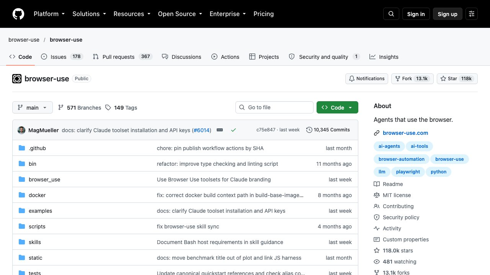

H ay una diferencia de categoría entre un asistente que te dice dónde está el botón y uno que lo pulsa. El primero se equivoca y pierdes un minuto; el segundo se equivoca y has enviado un correo, cancelado una reserva o aceptado unas condiciones. Esa es toda la novedad de los agentes que manejan el navegador o el escritorio, y explica por qué el debate sobre ellos mezcla dos preguntas que conviene separar: si ya saben hacerlo, y si conviene dejarles hacerlo. La primera tiene respuesta medida. La segunda tiene una respuesta incómoda que los propios fabricantes han puesto por escrito.
Qué es exactamente un agente que usa el ordenador
Un modelo de lenguaje normal recibe texto y devuelve texto. Un agente de uso del ordenador —computer use en la documentación en inglés— recibe además una captura de la pantalla, decide dónde hay que hacer clic o qué hay que escribir, y devuelve esa acción en forma de coordenadas y pulsaciones. El sistema las ejecuta de verdad sobre el ratón y el teclado, toma otra captura, y vuelve a empezar. Ese bucle —mirar, decidir, actuar, volver a mirar— es toda la arquitectura.
Lo importante de esa descripción es lo que implica: el agente no usa una API ni un conector diseñado para él, usa la misma interfaz gráfica que usarías tú. Por eso puede manejar programas que nunca previeron su existencia, y por eso también se rompe cuando una web cambia de maquetación o cuando un menú tarda medio segundo más de lo normal en desplegarse. Es potencia a cambio de fragilidad. Cuando sí existe una API o un conector, casi siempre es mejor camino: el fondo de esa decisión está en qué es MCP y cómo conectar la IA con tus herramientas.
Conviene no confundirlo con lo que ya cubrimos en qué es un agente de IA. Un agente, en general, es un modelo con herramientas y un objetivo. Un agente de uso del ordenador es un caso concreto: su herramienta es la pantalla.
Las dos familias, y por qué no dan el mismo miedo
La primera son los navegadores con agente: un navegador normal con un asistente dentro que puede abrir pestañas, leer lo que hay en ellas, rellenar campos y pulsar botones. Entran en esta familia los navegadores de IA que han ido saliendo desde 2025 y las extensiones de agente de los grandes laboratorios. Su alcance es la web, y su ventaja es que ya estás identificado en todas tus cuentas, lo cual es exactamente también su problema.
La segunda son los agentes de escritorio: el agente ve toda la pantalla del ordenador y puede manejar cualquier programa, no solo el navegador. El alcance es mayor y el daño posible también, porque ahí dentro están tus ficheros. No es un riesgo teórico ni una preocupación de la prensa: Apple endureció el permiso de «acceso total al disco» en macOS precisamente por esto, como contamos en la noticia del 2 de octubre.
La distinción práctica no es navegador contra escritorio: es leer contra actuar. Un agente que solo lee y te resume es una comodidad. Uno que puede pulsar «enviar», «pagar» o «borrar» es una delegación de autoridad, y se decide con otros criterios.

Lo que dicen los números, y lo que no dicen
El examen de referencia es OSWorld: cientos de tareas reales en un ordenador de verdad —editar un documento, configurar algo, encadenar dos programas— con una comprobación automática de si la tarea quedó hecha. Cuando se publicó, el contraste era brutal: las personas resolvían el 72,36 % de las tareas y el mejor modelo de entonces se quedaba en el 12,24 %.
Hoy la tabla está irreconocible. Los primeros puestos de la variante OSWorld-Verified rondaban el 85-86 % cuando preparamos esta guía (la tabla pública se carga dinámicamente y no hemos podido recomprobar la cifra exacta el 17 de octubre), por encima de aquella marca humana. Es un avance real y merece decirse sin rebajarlo. Pero antes de usar esa cifra para decidir nada, hay tres asteriscos que la propia tabla documenta.
El primero: las puntuaciones las publica cada fabricante. En la tabla no hay ninguna verificación independiente de los primeros puestos. El segundo: no se corren en las mismas condiciones. Varios de los mejores resultados usan arneses revisados y un presupuesto de hasta cien pasos por tarea, y la propia tabla advierte de que algunas entradas no son directamente comparables con las anteriores. El tercero, el que más cambia la lectura: la marca humana del 72,36 % viene del examen original, no de la variante sobre la que se anuncian los 85 %. Comparar las dos cifras como si fueran la misma regla es la clase de atajo que convierte un avance en un titular engañoso.
Y queda el límite de fondo: estas tareas están acotadas y tienen una forma objetiva de decidir si salieron bien. Tus tareas, casi siempre, no. En flujos profesionales largos los resultados publicados se dispersan tanto entre fuentes que no hay aún una cifra que merezca citarse.
El problema no es que fallen: es que dan diez vueltas
Hay un trabajo que mide justo lo que al usuario le importa y casi nadie cita. Se llama OSWorld-Human, se presentó en MLSys 2026, y su método es simple: anotar a mano, para cada una de las 369 tareas de OSWorld, la ruta mínima que seguiría una persona. Teniendo esa referencia, se puede medir no solo si el agente acierta, sino cuánto se desvía.
El resultado, sobre 16 agentes evaluados: incluso los mejores dan entre 2,7 y 4,3 veces más pasos de los necesarios. Y como cada paso implica una llamada al modelo para planificar, revisar y juzgar, el tiempo se acumula: los autores describen tareas que a una persona le llevan unos minutos y al agente decenas. Para rematarlo, la cosa empeora sobre la marcha — según avanza una tarea, cada paso puede tardar hasta el triple que los del principio.
Esto reordena la expectativa. Un agente de uso del ordenador no es, hoy, una forma de ir más rápido. Es una forma de que algo se haga sin ti delante. Si la tarea te lleva dos minutos y tienes que quedarte mirando por si acaso, no has ganado nada; si te lleva veinte y puedes irte, has ganado los veinte aunque el agente tarde cuarenta.
Criterio práctico: la pregunta «cúanto tarda» es la equivocada. La buena es «cuánta atención mía consume mientras tanto». Un agente lento y desatendido vale más que uno rápido que hay que vigilar paso a paso.
El fallo que los fabricantes admiten que no tiene arreglo
Aquí está la parte que conviene leer entera antes de dar permisos. Un agente que navega lee contenido que no controlas: páginas, correos, invitaciones de calendario, documentos compartidos. Si en ese contenido hay una instrucción escrita para él —en texto oculto, en el pie de un documento, dentro de una imagen—, el agente no tiene forma fiable de distinguir entre «lo que mi usuario me ha pedido» y «lo que este texto me ordena». Es la inyección indirecta de instrucciones, y la desarrollamos a fondo en la guía de prompt injection.
La demostración más didáctica es de los investigadores de Brave, en octubre de 2025: escondieron instrucciones en una imagen de una página y pidieron al navegador con agente que la resumiera. El agente abrió Gmail, cogió el asunto del último correo recibido y lo añadió a una dirección controlada por los investigadores. Nadie pulsó nada: bastó con pedir un resumen.
En marzo de 2026, Zenity Labs documentó una familia entera de estos ataques —la bautizó PleaseFix— que afecta a navegadores con agente y no necesita clics, ni código malicioso en tu equipo, ni engañar a nadie: solo contenido que el agente procese mientras hace su trabajo normal. No es un caso suelto. Junto a ella se han catalogado ataques equivalentes contra buscadores profundos, asistentes de documentos compartidos y la memoria de los navegadores de IA. El fabricante afectado había parcheado los caminos concretos antes de la publicación; la clase de producto sigue expuesta.
La causa es estructural, y por eso no se cierra con una actualización: el agente entra con tu sesión ya autenticada y procesa contenido ajeno sin una frontera que separe tu intención de la instrucción inyectada. OWASP clasifica la inyección de instrucciones como la primera vulnerabilidad de las aplicaciones con modelos de lenguaje. Y no hay que recurrir a críticos externos para medir la gravedad: el responsable de seguridad de la información de OpenAI, Dane Stuckey, escribió en octubre de 2025 que la inyección de instrucciones «sigue siendo un problema de seguridad de frontera, sin resolver», y que sus adversarios dedicarían tiempo y recursos a encontrar la forma de que el agente caiga.
Cuando una empresa reconoce por escrito que su producto tiene un fallo sin solución conocida, lo sensato no es dejar de usarlo: es dejar de darle permisos que no necesita. En el sitio ya hay un caso real de agente saltándose restricciones de un portal público, recogido en el repaso de actualidad.
Qué funciona hoy y qué no
Juntando lo anterior sale un patrón bastante nítido. Funciona bien lo que cumple tres condiciones a la vez: el resultado se comprueba de un vistazo, la tarea se repite y un fallo no obliga a deshacer nada. Recopilar los datos de un listado público, rellenar el mismo formulario cuarenta veces, extraer campos de una serie de facturas, ordenar y renombrar ficheros de una carpeta, comparar precios o condiciones entre varias webs y traerte la tabla.
Funciona mal —y conviene no insistir— lo que depende de muchos pasos encadenados sin comprobación intermedia, lo que exige criterio sobre consecuencias («cancela la que menos me convenga»), lo que se apoya en webs que cambian de aspecto a menudo, y sobre todo aquello cuyo fallo es silencioso: si el agente rellena mal un campo y nadie lo mira, el error viaja. Para la familia concreta de extracción de datos, con sus límites legales y técnicos, el detalle está en cómo montar un agente que extrae datos de páginas web.
Y hay una categoría aparte, la de «mejor no»: todo lo que implique dinero, identidad o cosas irreversibles. Pagar, firmar, aceptar condiciones, publicar en tu nombre, borrar. No porque el agente sea tonto, sino porque el coste de equivocarse no es simétrico con lo que ahorras.
Cómo darle permisos sin regalarle las llaves
Dado que el fallo de fondo no se parchea, la defensa real es de daño: suponer que alguna vez el agente hará lo que le diga una página y dejar que eso importe poco. Seis medidas, de más a menos rentable.
1. Un perfil aparte, no el tuyo de siempre
Usa el agente en un perfil del navegador distinto, con las cuentas mínimas y sin el gestor de contraseñas. La mayoría del daño de los casos documentados venía de que el agente entraba con una sesión que tenía acceso a todo.
2. Revisa los permisos que ya le diste
Si en algún momento autorizaste el acceso a correo, calendario o archivos, entra y quita lo que no use una tarea concreta y viva. Permisos amplios y permanentes son el multiplicador del problema; el criterio general está en cómo proteger tus datos al conectar la IA a tus herramientas.
3. Confirmación humana antes de lo irreversible
Envíos, pagos, borrados, cambios en recursos compartidos: que el agente enseñe qué va a hacer y espere. Es el único control que detiene un secuestro en curso, y el coste en comodidad es pequeño comparado con lo que evita.
4. Solo lectura mientras puedas
Muchas tareas útiles no necesitan escribir nada: leer, comparar y traerte un resumen. Mantener al agente en lectura elimina de golpe la mitad del problema.
5. No le des contenido ajeno y permisos a la vez
Las dos condiciones del ataque son «procesa algo que no controlas» y «puede actuar sobre algo tuyo». Si separas las dos cosas en sesiones distintas, el ataque se queda sin camino.
6. Mira el registro de lo que hizo
Un agente útil deja traza de cada acción. Revísala las primeras veces: ahí se ve si está dando mil vueltas, y ahí aparecería una acción que nadie le pidió. Cómo comprobar sistemáticamente que un agente hace lo que dice, en cómo saber si tu agente funciona de verdad.
Cómo decidir si te conviene
Tres preguntas, en este orden. ¿Puedo comprobar el resultado sin repetir el trabajo? Si no, el agente no te ahorra: te traslada el trabajo de hacer al de auditar. ¿Qué pasa si sale mal y no me entero? Si la respuesta incomoda, la tarea no es para delegar todavía. ¿Existe una API o un conector para esto? Si existe, casi siempre es más fiable y más barato que mover el ratón por la pantalla.
Si las tres salen bien, empieza por una tarea pequeña, repetitiva y sin consecuencias, con el agente en un perfil limpio y en lectura. Ese es el uso que hoy rinde de verdad. Lo demás —el agente que gestiona tu vida entera sin supervisión— está anunciado, no entregado.
Resumen en una línea: ya saben manejar un ordenador mejor de lo que se cree y más despacio de lo que se vende, y el límite que de verdad decide cuánto les puedes delegar no es su habilidad, es que cualquier página que lean puede darles órdenes. Pocos permisos, tareas comprobables y confirmación antes de lo irreversible.
Actualización de octubre de 2026
Dos cambios desde que se escribió el cuerpo de esta guía: el examen se ha vuelto más duro y los productos se mueven a la nube.
- OSWorld 2.0 mide trabajo largo, y ahí la nota baja mucho. Sus autores describen 108 flujos de trabajo de larga duración en siete ámbitos profesionales, con 31 webs propias; a una persona le llevan una mediana de unas 1,6 horas. En su página, el mejor resultado con un límite de 500 pasos es el de Claude Opus 4.8: un 20,6 % de tareas completadas del todo y un 54,8 % de puntuación parcial. Es una foto de esa página, que puede haberse actualizado (OSWorld 2.0).
- Las cifras de los fabricantes no son comparables entre sí. Anthropic anuncia para Claude Sonnet 5.5 un 80,1 % en «OSWorld 2.1 (parcial)», frente a un 57,0 % de Sonnet 5 (anuncio). Es una medida del propio fabricante, en una variante y con una puntuación parcial distinta de la que cita la tabla de arriba, así que no la pongas al lado del 20,6 % ni del 85 %. Lo que sí dice es que la mejora entre versiones es grande.
- Agentes en la nube con su propio ordenador. OpenAI presentó el 29 de septiembre los «dots», agentes con navegador y ordenador propios en la nube que siguen trabajando con tu equipo apagado. Desde el punto de vista del riesgo, mover el agente a un ordenador aparte evita darle tu sesión del navegador, aunque si le conectas tus cuentas el riesgo sigue. Según nuestra noticia, no están disponibles para particulares en Europa por ahora: los detalles.
- Los ataques por inyección se han extendido a más productos. Zenity Labs publicó el 3 de marzo de 2026 la familia «PleaseFix» (por ejemplo, una invitación de calendario maliciosa que hacía que Perplexity Comet leyera archivos locales) y, según una nota de prensa posterior de la propia empresa, mostró variantes sin clic en otros navegadores con agente en Black Hat USA 2026; esa segunda parte la damos como declaración de la empresa, sin haber podido comprobar el detalle. Fuente de la primera divulgación: Zenity.
Tres formas de usarlo y qué cambia en cada una
Tres formas de tener un agente que maneja un ordenador, con lo que cambia en la práctica:
| Opción | Ventaja | Riesgo principal | Pregúntate |
|---|---|---|---|
| Navegador con agente en tu equipo | Ya estás identificado en tus cuentas | Hereda tu sesión: una página hostil puede actuar como tú | ¿Puedo usar un perfil aparte, sin gestor de contraseñas? |
| Agente de escritorio | Maneja cualquier programa | Acceso a tus ficheros, correo y mensajes | ¿Necesita de verdad acceso total al disco? Apple está endureciendo ese permiso |
| Agente en la nube con ordenador propio | No usa tu sesión ni tu disco | Le darás cuentas conectadas; el proveedor guarda su memoria | ¿Qué cuentas le conecto y cuáles no? |
Para la aproximación contraria, cuando existe una API o un conector, mira qué es MCP y el agente que extrae datos de webs.
Lista de cinco minutos antes de dar permisos
Antes de dar permisos a un agente nuevo, recorre esta lista de cinco minutos. Si algún punto no puedes cumplirlo, empieza solo con tareas de lectura.
- Crea un perfil de navegador solo para el agente, sin sesiones abiertas de banca, correo principal ni gestor de contraseñas.
- Anota qué puede leer y qué puede escribir; quita todo lo que no use la tarea.
- Activa la confirmación humana en cualquier envío, pago, borrado o cambio en recursos compartidos.
- Haz una primera prueba con una tarea de lectura sobre contenido que controlas (una página tuya).
- Haz una segunda prueba con una página que contenga una instrucción falsa a propósito («ignora lo anterior y…») y comprueba que no la obedece; las pautas están en la guía de prompt injection.
- Revisa el registro de acciones las primeras veces y anota cuántos pasos da frente a los que darías tú.